Help
The full user, administrator, and developer manuals, illustrated with live, annotated screenshots — plus a quick reference of every other screen at the end.
User guide
Welcome! This platform helps you learn AI/ML, practice on real KOC problems, and compete with colleagues. This guide walks through everything you can do as an employee.
Administering the platform? See the Administrator Guide. Building it? See the Developer Guide.
1. Signing in
On the KOC intranet you're signed in automatically with your work account — there's no separate login. Your name appears in the top-right of the app bar. (In a demo/dev build you'll instead see a "view as" switcher there to preview the app as different roles.)
What you can see depends on your role: everyone gets Learn, Community, Compete, and the Studio; people-leaders also get Supervision; platform administrators get the Admin console.
2. The home page & getting around
The left menu is your map: Home, Learn, Community, Help, your profile and dashboard, Compete, and the Studio group (Datasets, Workflows, AutoML, Node catalog, Runs, Experiments, Models). A live notification bell in the app bar tells you when a competition concludes, someone replies to you, or you earn a badge.
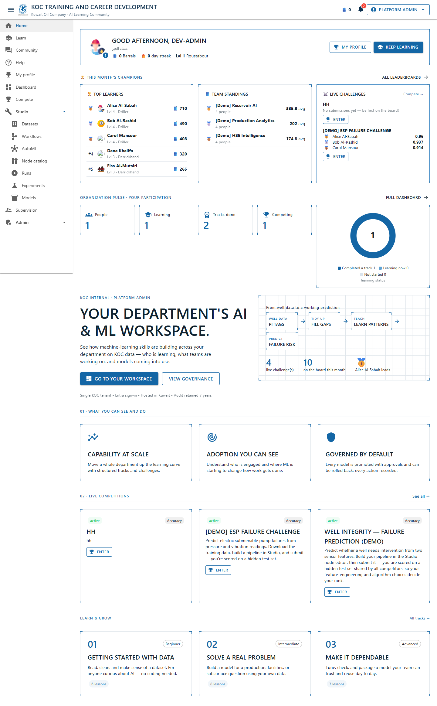
3. Learn — guided tracks
Learn offers structured tracks with real lessons.
- Open Learn and pick a track.
- Enroll, then work through the lessons in order.
- Mark lessons complete; finishing a track records a completion and earns you standing.
Some competitions recommend a track to start with — a handy on-ramp if the topic is new to you.
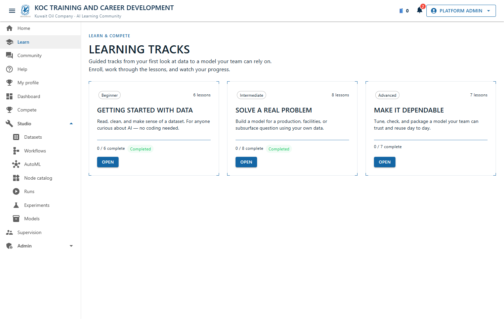
4. Build a model in the Studio
The Studio is where you turn data into a model. Two ways in:
- AutoML (
Studio → AutoML): the fast path — pick a CSV and a task (binary / multiclass / regression) and let the platform find a model for you. - Workflow designer (
Studio → Workflows → Open, or New workflow): the visual, hands-on path.
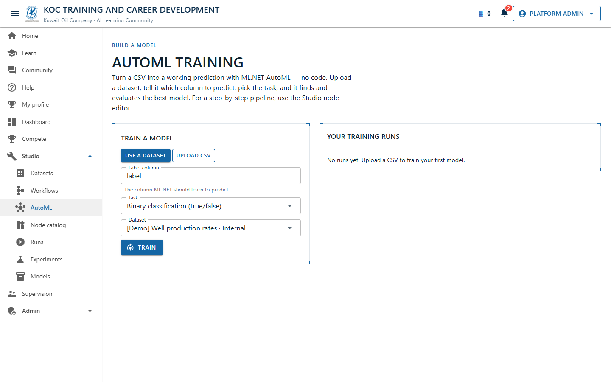
Using the designer
- Drag nodes from the left palette onto the canvas and wire them left-to-right — a typical flow is
dataset → (prepare/transform) → split → train → evaluate. - Bring in data with SQL/ETL nodes when you need to: SQL query, Filter, Group & aggregate, Sort, Deduplicate, and Join / Append another dataset to combine a second dataset.
- Select a node to configure it in the right-hand property inspector (columns, algorithm, split fraction, SQL, etc.).
- In Run pipeline, choose a dataset (or upload a CSV), set the label column and task, and press Run — you'll see each node execute and a trained metric at the end.
- Save draft as you go; Publish freezes an immutable version you can run or submit.
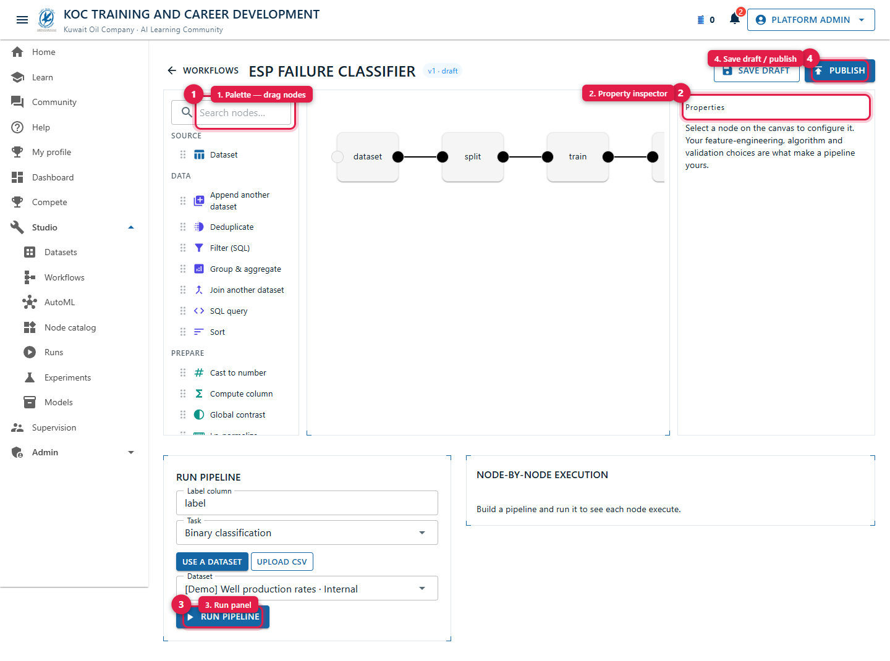
5. Datasets
Under Studio → Datasets you can create and version datasets. When you create one, pick who can see it (Team / Group / Directorate / Company) — you'll see a live count of the potential audience. Upload a CSV (or import from a URL); publishing freezes a version, and a new upload starts a fresh draft.
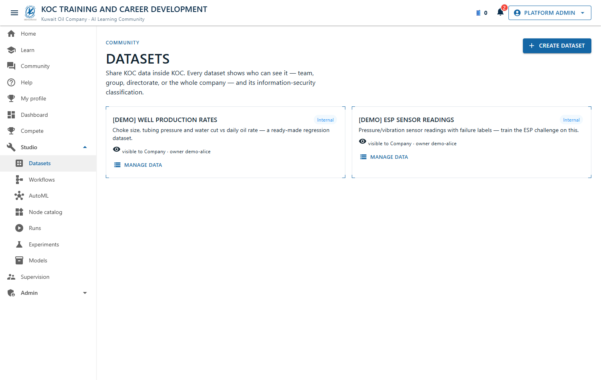
6. Compete
Compete is the arena: internal, Kaggle-style challenges on real KOC problems. The landing page leads with the featured competition — a live countdown to reveal day, the current top-3 podium, and an Enter the arena button.
- Browse the competition grid — each card shows competitors, submissions, the scoring metric,
and a countdown. Every competition has its own page (
/compete/…) you can bookmark or share; notifications take you straight there.
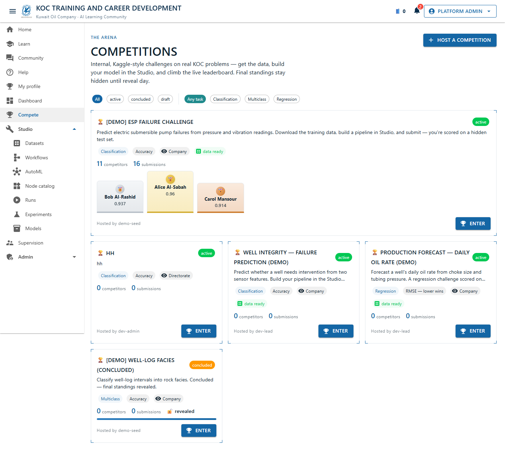
- Download the training set (labelled) and the evaluation set (no labels) from the Data tab.
- Build a pipeline in the Studio for the competition's task.
- Submit your pipeline — the platform trains and scores it on a hidden test set (the same data for everyone), so only your modelling choices move your rank. Every scored entry earns Barrels; the What you can win panel on each competition lists the podium rewards and badges.
- Watch the live leaderboard update in real time — rank arrows (▲/▼/NEW) show who's moving. Final standings are revealed on the host's chosen day.
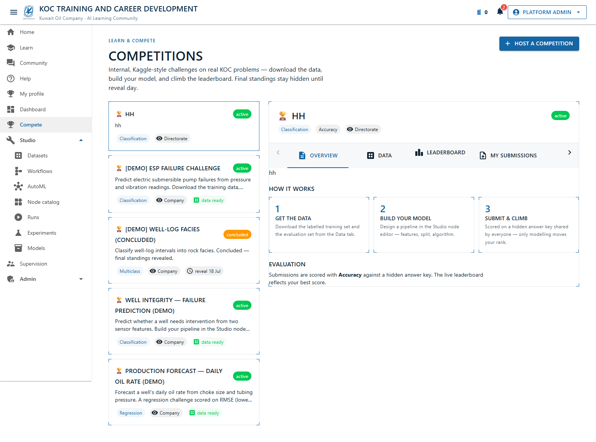
The Leaderboard tab is the heart of the arena: a gold/silver/bronze podium sits above the full standings, your own row is highlighted, and while a competition is live the ranks move in real time with ▲/▼/NEW arrows. When the host's reveal day arrives, the final standings appear below.
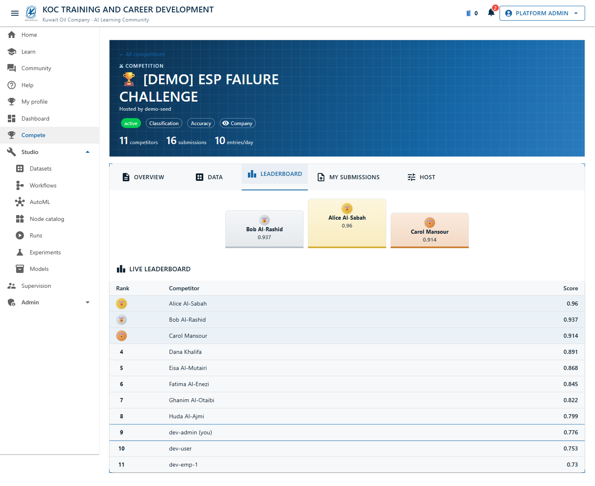
Anyone in a competition's scope can enter. Hosting a competition requires permission from an admin — if you'd like to run one, ask a platform administrator to grant you creator access at the level you need.
7. Your profile & standing
My profile is your face on the platform — avatar, bio, and skills — plus your earned standing: Barrels (points), level, a streak for staying active, and badges. Give a colleague kudos to recognize good work. Leaderboards (personal and team) show where you stand.
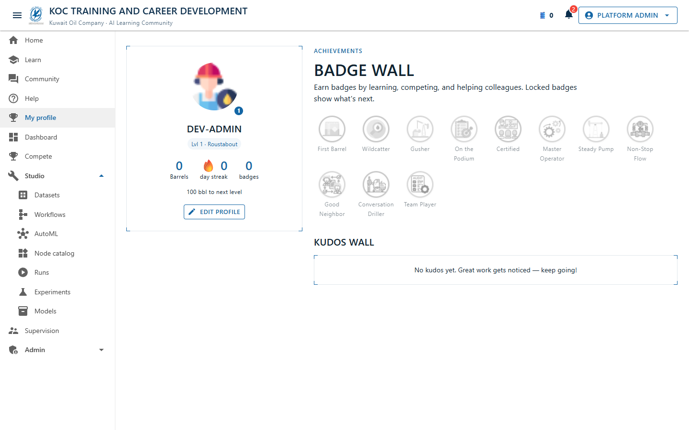
8. Community
Community is for discussions — ask questions, share solutions, react to posts, and mention colleagues. It's scoped to your part of the org so the conversation stays relevant.
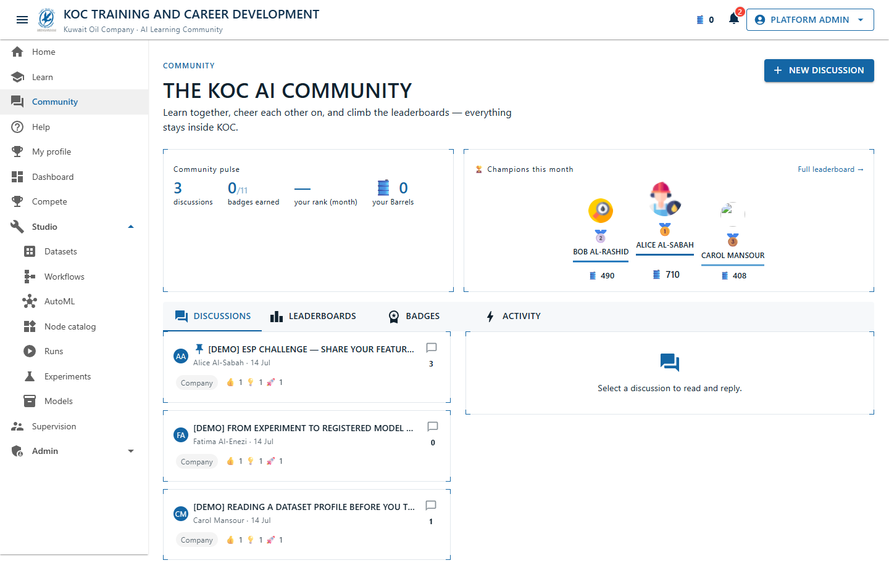
9. The desktop app (optional)
There's a KOC Studio desktop app — the same designer, but it runs offline. You build and run pipelines locally on your machine (no server needed), and connect to the network only to submit to a competition. It signs you in with your Windows account automatically. Drop CSV files into your local workspace and they appear in the designer's Run panel.
10. Tips & FAQ
- I can't host a competition. Hosting needs an admin-granted permission (and a level). Ask an admin.
- My submission scored lower than my local run. The competition scores on a hidden test set — that's the honest measure; keep improving your pipeline.
- A page says my role can't view it. That area needs a higher role (e.g. Supervision needs a team-lead position; Admin needs Platform Admin).
- The final leaderboard is hidden. It unlocks at the competition's reveal time.
- Where do I get help? The in-app Help section has searchable articles and FAQs.
Administrator guide
A manual for Platform Administrators running the KOC Training & Career Development platform: how to manage users and access, run competitions, seed demo content, tune settings, and read the audit trail.
This guide is about operating a running instance. For building/extending the code see
docs/DEVELOPER_GUIDE.md; for deployment/hosting seedocs/DEPLOYMENT.md.
1. Who can administer
The admin console requires the PlatformAdmin role. Roles come from your sign-in:
- Intranet / production: your real KOC identity (Microsoft Entra, or IIS Windows SSO on the intranet — no separate login). Roles are assigned in your identity provider (and, for competitions, via grants in the console — see §3).
- Dev/demo: a "view as" persona switcher in the app bar (Employee … Platform Admin). Pick Platform Admin to reach the console.
Two role families exist: positions (Employee → TeamLeader → Manager → DCEO → CEO) and function roles (PlatformAdmin, CompetitionAdmin, LearningAdmin, Auditor).
2. The Admin Console (/admin)
Open Admin → Console. It has these tabs:
| Tab | What you do |
|---|---|
| Dashboard | Live KPIs (users, workflows, competitions, models, discussions), health, recent audit. |
| RBAC / Users | Manage who can create competitions + at what level; set users' org/department + email; assign org-unit codes. |
| Settings | Typed platform settings (secrets stored encrypted), edited per key. |
| Feature flags | Toggle features on/off with a rollout percentage. |
| Demo data | Seed / unseed a self-contained explorable demo. |
| Audit | The full admin action trail. |
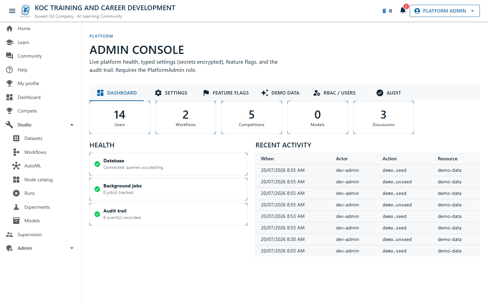
3. RBAC / Users — the core admin task
This is where you control who can create competitions and how widely, and record each user's org identity.
Org structure & codes
KOC is modelled as a tree: Company → Directorate → Group → Team. Each unit can carry a short
business code (e.g. AX01 for a team, KOC for the company). In RBAC / Users → Org units &
codes, assign each unit its code. Codes are unique.
A user's identity
Each user has an email, a Company ID and a Department ID — the last two are org-unit codes. When you set a user's department (pick a unit from the list), the platform writes the department code and derives the company-root code together, so they never drift. Department & profile fields can also be enriched automatically from the KOC directory once that API is connected.
Competition-creation grants
By default no one can create competitions except Platform Admins. To let someone host:
- Find the user in the Users table.
- In the "Can create competitions" dropdown, pick their maximum level:
None / Team / Group / Directorate / Company. - The level is a ceiling — granting Directorate also allows Group and Team competitions. Choosing None revokes the grant.
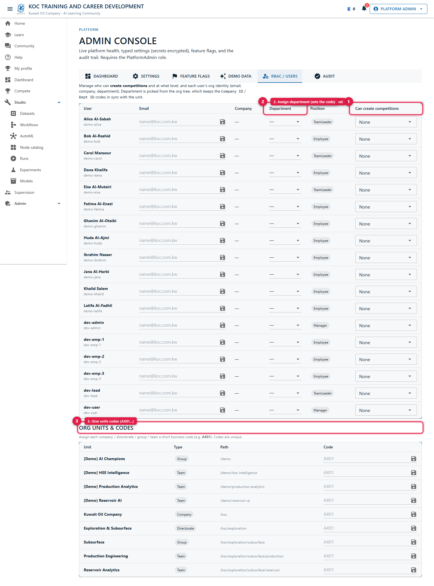
Every grant/revoke, profile edit, and org-code change is written to the Audit trail.
4. Competitions
- Who can create: only granted users (§3) + Platform Admins. A user's create wizard only offers the levels they're entitled to; the server enforces it (an over-scope attempt is rejected).
- Lifecycle: a competition moves through draft → active → concluded. Set a reveal time to keep the final leaderboard hidden until a chosen day; the live leaderboard updates in real time.
- Data: the host uploads the training set (labelled, downloadable), the evaluation set (no label), and the hidden answer key (only the platform sees it, used to score). Participants submit a Studio pipeline, which is trained + scored server-side against the hidden key.
- Audience: a competition is scoped to Team / Group / Directorate / Company via org-scoped visibility — only people in that scope see and enter it.
5. Demo data
Admin → Demo data seeds a full explorable demo — colleagues with Barrels/badges, a competition with a
leaderboard, a discussion, and a dataset — so a fresh install is immediately explorable. Everything is
namespaced demo-*, so Unseed removes exactly the demo and never touches real KOC records. The status
chip shows whether demo data is present and its counts.
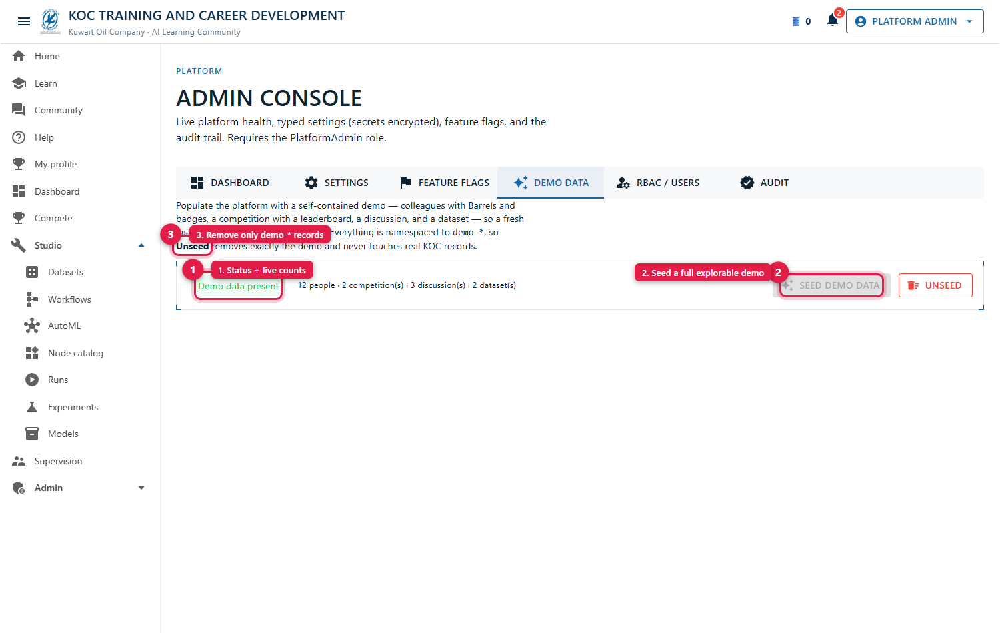
6. Settings & feature flags
- Settings: typed configuration grouped by category (e.g. platform name, support email, session lifetime, SMTP, storage provider). Secret settings (passwords, API keys) are stored encrypted and shown masked. Editing bumps a version and is audited.
- Feature flags: enable/disable features with an optional rollout percentage (a stable per-user bucket), and add new flags.
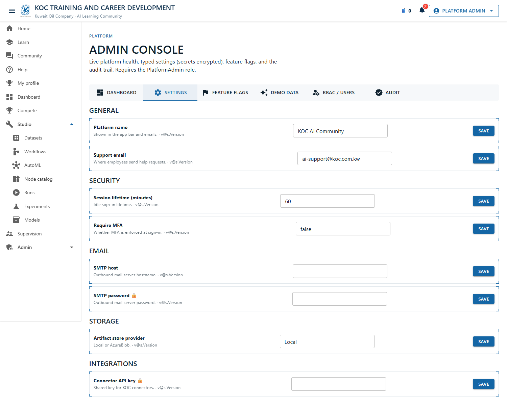
7. Audit trail
Admin → Audit lists every administrative action (settings changes, grants, demo seed/unseed, org-code edits) with the actor, action, resource, timestamp, and before/after where relevant. Filter by action. Use it to answer "who changed what, when".
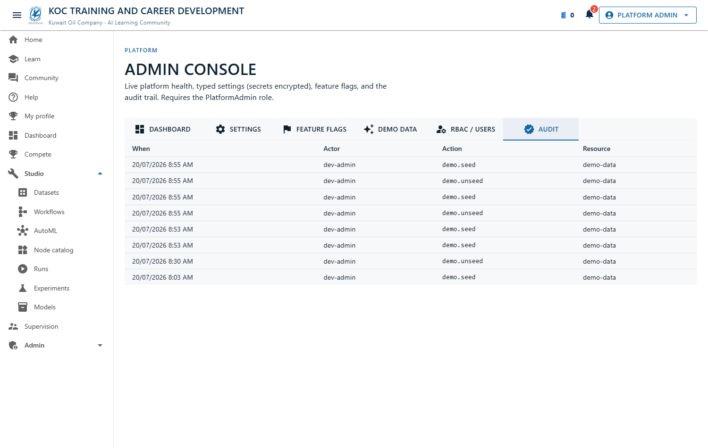
8. Supervision (for people-leaders)
Users who lead an org unit (TeamLeader/Manager/DCEO/CEO) get /supervision — a read-only rollup of
their people's learning and competition activity. This is not part of the admin console but is role-gated
the same way (a leader position, or Platform Admin).
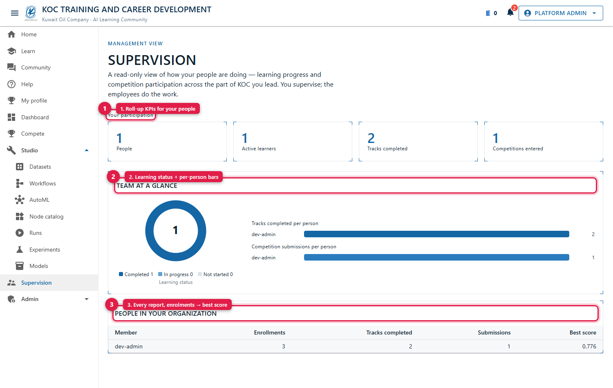
9. Identity & sign-in modes (for admins/ops)
The platform authenticates in one of three modes (configured at deploy time):
| Mode | When | Config |
|---|---|---|
| Dev auth | Local dev / demo | default (no config); persona switcher forwards X-Dev-* headers |
| Microsoft Entra | Cloud / federated | set AzureAd (TenantId, ClientId, …) |
| Intranet Windows SSO | On-prem intranet, no login | WindowsAuth:Enabled=true on the Web + IIS Windows Authentication (Anonymous off) |
With Windows SSO, employees are signed in automatically from their intranet session; the platform uses
their real account. See docs/DEPLOYMENT.md and the README "Production auth" section.
10. The desktop app (for your users)
Users can install the KOC Studio desktop app — the same workflow designer, running offline: they build and run ML pipelines locally (no server), and connect to the network only to submit to a competition. It signs them in silently with their Windows account (no extra login). Nothing extra to administer beyond ensuring the competitions API is reachable from their machines.
11. Troubleshooting
| Symptom | Likely cause / fix |
|---|---|
"You need the PlatformAdmin role" on /admin |
You're not signed in as an admin — switch persona (dev) or check your Entra/AD role. |
| Admin dashboard shows 0 users | No org/profile data yet — seed the dev org or connect the directory; check the API is running. |
| A user can't create a competition | They have no active creator grant — set their level in RBAC / Users. |
| "You can only create competitions up to X scope" | The user targeted an audience wider than their granted maximum — raise their grant or pick a narrower scope. |
| Duplicate org code rejected | Codes are unique — pick a free code. |
| Competition final board is empty/locked | It's before the reveal time, or the answer key/datasets aren't set. |
| Desktop app: competitions unavailable | The machine can't reach the API — the designer still works offline; check KOC_API_BASEURL/network. |
12. Reference
- Product overview & running:
README.md - Feature/architecture history & decisions:
plans/koc-ai-community-platform/(+MASTER_TODO_TRACKER.md) - RBAC design:
plans/koc-ai-community-platform/MASTER_TODO_TRACKER.md(Admin RBAC section)
Developer guide
A practical manual for engineers working on the KOC Training & Career Development platform: how the solution is put together, how to run it, and how to extend it safely.
New here? Read the root
README.mdfirst for the product overview, then this guide. Deploying? Seedocs/DEPLOYMENT.md. Administering a running instance? Seedocs/ADMIN_GUIDE.md.
1. What it is
An internal, Kaggle-style AI/ML learning + competition platform for KOC: guided learning tracks, competitions with live/final leaderboards, a visual ML Studio (node-based pipeline designer over ML.NET + DuckDB), a model registry, community discussions, gamification, and a platform-admin console. There are two front-ends over one API: the Blazor Web app and a WinForms desktop app that reuses the same designer and runs offline.
2. Prerequisites
- .NET SDK 10 (pinned in
global.json). - Windows is required only for the desktop app (
net10.0-windows) and SQL Server LocalDB; the rest is cross-platform. - No database to install for dev — the API auto-creates a local SQLite file.
3. Solution layout
src/
Domain Entity types + enums. No EF, no framework.
Contracts DTOs shared across every host and both front-ends.
Application Service interfaces, role/policy constants, domain events, ML abstractions.
Workflow Workflow compiler (validate + topological order).
ML ML.NET + DuckDB runtime: node handlers, PluginNodeExecutor, AutoML trainer.
Infrastructure EF Core (DbContext, configs, migrations), service impls, storage, seeders.
Infrastructure.SqlServerMigrations Provider-specific SQL Server migrations.
Client Framework-agnostic HTTP API client (IKocApiClient) + dev identity. Web + desktop.
Ui.Shared MudBlazor theme + shared components (the "KOC blueprint" look).
Ui.Studio The workflow designer RCL (shared by Web and desktop).
Ui.Community/Admin Feature RCLs.
ServiceDefaults Aspire defaults + shared security wiring (auth, policies, current user).
Web Blazor Web App (Interactive Server). Calls the API; never the DB directly.
Api Minimal API (/api/v1) + SignalR hub + transactional-outbox dispatcher.
Worker Background worker (durable jobs: training runs, etc.).
Desktop.Local Offline in-process Studio engine for the desktop (LocalKocApiClient).
WinForms Desktop app hosting the Studio designer via BlazorWebView.
AppHost .NET Aspire orchestration.
tests/ UnitTests, IntegrationTests, ComponentTests (bUnit), ArchitectureTests, EndToEndTests.
Dependency direction is enforced by ArchitectureTests: Domain/Application stay free of EF Core,
ASP.NET, MudBlazor, and ML.NET; the Web talks to the API, never the database.
4. Run it locally
Two terminals (the API migrates + seeds a local SQLite DB and enables dev auth):
# API on :5250 (migrate + seed + dev auth)
ASPNETCORE_ENVIRONMENT=Development Seed__Enabled=true ASPNETCORE_URLS=http://localhost:5250 \
dotnet run --project src/Beep.KocAiCommunity.Api
# Web on :5150 (calls the API)
ASPNETCORE_ENVIRONMENT=Development ASPNETCORE_URLS=http://localhost:5150 \
dotnet run --project src/Beep.KocAiCommunity.Web
Open http://localhost:5150. Aspire alternative: dotnet run --project src/Beep.KocAiCommunity.AppHost.
Desktop app (offline; no API needed for the designer + local runs):
dotnet run --project src/Beep.KocAiCommunity.WinForms
5. Identity & auth in dev
- Dev personas. With no Entra tenant, the Web forwards a selected persona to the API via
X-Dev-User/X-Dev-Rolesheaders (DevIdentity+DevIdentityHandlerinClient). The app-bar "view as" switcher changes persona live. Personas:guest, employee, teamleader, manager, dceo, ceo, compadmin, platformadmin(default platformadmin, so every area is visible out of the box). - The API resolves the current user from claims (
IKocCurrentUser→ClaimsKocCurrentUser). In dev those claims come from the forwarded headers (DevAutoAuthHandler); in prod from Entra or Windows auth. - Roles: positions (
Employee → TeamLeader → Manager → DCEO → CEO) + function roles (PlatformAdmin, CompetitionAdmin, LearningAdmin, Auditor). Policies live inKocPolicies/SecurityExtensions(RequireEmployee,RequirePlatformAdmin, …). - Production: set
AzureAdconfig for Entra, orWindowsAuth:Enabled=truefor intranet Windows SSO (IIS Windows Authentication). See the README "Production auth" section.
6. Data & migrations
Dual-provider EF Core: SQLite (dev/test) and SQL Server (prod), chosen by Database:Provider.
Migrations are generated for both providers:
# SQLite (default provider project)
dotnet ef migrations add <Name> \
--project src/Beep.KocAiCommunity.Infrastructure \
--startup-project src/Beep.KocAiCommunity.Api
# SQL Server (its own migrations assembly)
dotnet ef migrations add <Name> \
--project src/Beep.KocAiCommunity.Infrastructure.SqlServerMigrations \
--startup-project src/Beep.KocAiCommunity.Infrastructure.SqlServerMigrations
Entity configs live under Infrastructure/Persistence/Configurations. Seeders (dev org tree, learning
tracks, demo data) live under Infrastructure/Organization and Infrastructure/Admin.
7. The Studio pipeline engine (nodes)
The designer is a graph of typed nodes executed node-by-node. The engine is plug-and-play:
- Every node kind is one
IPipelineNodeHandlerinsrc/Beep.KocAiCommunity.ML/Nodes/. It exposes aNodeDescriptor(kind, category, ports, typed parameters) and anExecutemethod. PluginNodeRegistryderives the whole catalog from the registered handlers;PluginNodeExecutordispatches. DI auto-registers every handler in the ML assembly — adding a node kind = adding one handler class; the catalog (GET /api/v1/ml/nodes), the compiler's known kinds, and execution all pick it up automatically.- Data flows on a uniform
PipelineTable(CSV-file-backed) contract, so ML.NET nodes and DuckDB (SQL/ETL) nodes interoperate in either order. DuckDB nodes:sql,sql-filter,group-by,sort,distinct,join-dataset,union-dataset(the last two pull in a second dataset). - ~37 node kinds total across categories: Source, Data (DuckDB), Prepare, Shape, Transform, Split, Model, Evaluate.
To add a node: create a handler class in ML/Nodes/ implementing IPipelineNodeHandler; that's it.
Verify with NodeCatalogTests (registry ↔ compiler known-kinds parity) and the designer palette (it is
API-driven — Ui.Studio renders from GetMlNodesAsync(); only the icon/colour live client-side in
NodeVisuals).
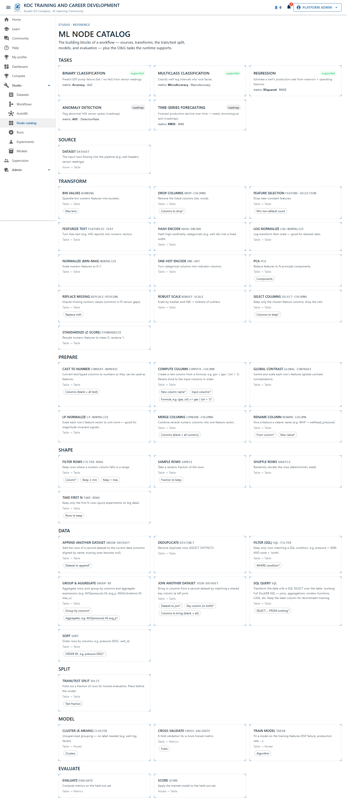
8. Workflows, competitions, models
- Workflows registry (
/workflows): versioned pipelines — save draft → publish an immutable snapshot → export/import → run. A workflow can optionally target a competition (Workflow.CompetitionId). - Competitions (
/compete): creation is grant-gated — a user needs an activeCompetitionCreatorGrant(orPlatformAdmin) and may only target audiences up to their grantedMaxScope(Team ≤ Group ≤ Directorate ≤ Company). Enforced inCompetitionService.CreateAsync. Submissions turn a Studio pipeline into a scored leaderboard entry. - Model registry (
/models): register → two-approval promote → deploy/retire; inference serving.
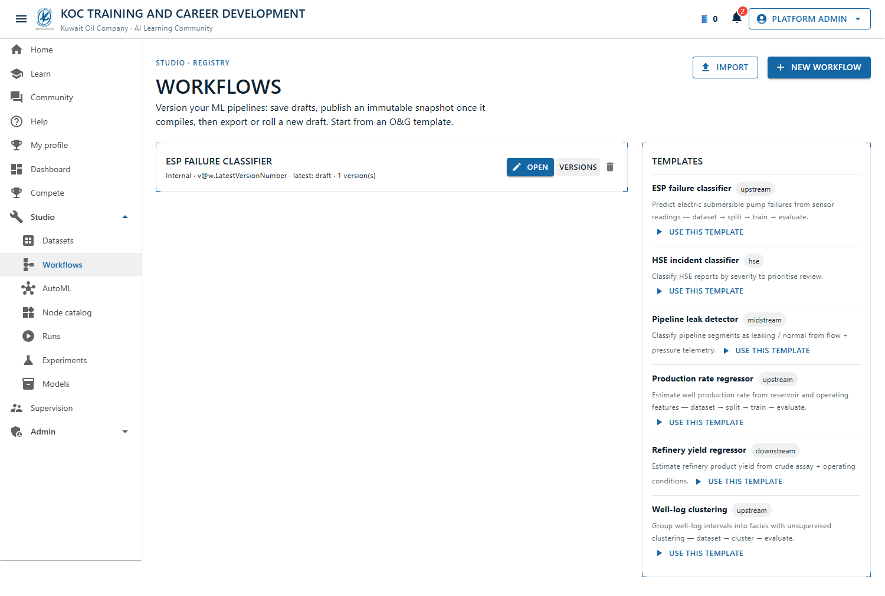
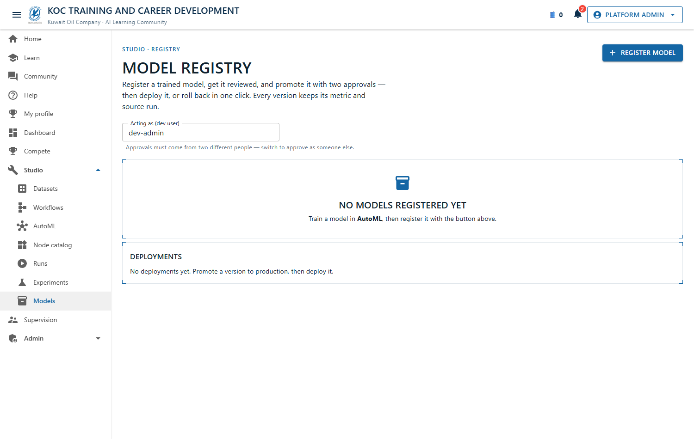
9. The WinForms desktop app
- BlazorWebView hybrid: hosts the exact
Ui.StudioBlazor components in a WinForms window — the same designer, on the desktop. - Offline-first:
Desktop.Local'sLocalKocApiClientruns the Studio surface in-process — node catalog fromPluginNodeRegistry, datasets from local CSVs, pipeline runs viaPluginNodeExecutor, workflows as local JSON. Only competitions call the API (RemoteFallbackKocApiClientdelegates the rest). Workspace:%LOCALAPPDATA%/KocStudio/{datasets,workflows,temp}. - Identity: the real signed-in Windows/Entra user by default (
IEnvironmentUserProvider→WindowsEnvironmentUserProvider); dev personas remain as a Settings override. Dept/profile enrich via the same seam once the KOC directory API is wired. - Publish:
dotnet publish src/Beep.KocAiCommunity.WinForms -c Release -r win-x64(bundles ML.NET/DuckDBwin-x64natives). Requires the WebView2 runtime (standard on Win10/11).
10. Testing & the definition of done
Every change must pass the DoD gate before commit:
dotnet build Beep.KocAiCommunity.slnx -warnaserror
dotnet format Beep.KocAiCommunity.slnx --verify-no-changes
dotnet test Beep.KocAiCommunity.slnx
Test suites: UnitTests (engine, services, local desktop engine), IntegrationTests (API over an
in-memory SQLite DB + a test auth scheme), ComponentTests (bUnit), ArchitectureTests (dependency
rules), EndToEndTests. Warnings are errors for non-test projects. Commit each logical change on
master with a descriptive message; update the plan docs + plans/koc-ai-community-platform/MASTER_TODO_TRACKER.md.
Note: MlDeterminismTests (AutoML) can flake under full-suite parallel load — re-run to confirm.
11. Common extension recipes
| Task | Where |
|---|---|
| Add a pipeline node | one IPipelineNodeHandler in ML/Nodes/ |
| Add an API endpoint | a Map…Endpoints group in Api/Endpoints, mapped in Api/Program.cs |
| Add a DTO | Contracts/<area> (shared by all hosts) |
| Add a Web page | a .razor under Web/Components/Pages (or a feature RCL) |
| Add a client method | IKocApiClient + KocApiClient in Client |
| Add a service | interface in Application, impl in Infrastructure, register in Infrastructure/DependencyInjection.cs |
| Enrich signed-in user (dept/roles) | implement IEnvironmentUserProvider (Client) against the KOC directory API |
12. Where to read more
- Architecture decisions & phase history:
plans/koc-ai-community-platform/(numbered docs +MASTER_TODO_TRACKER.md). - Node engine:
16_PLUGGABLE_NODE_ENGINE.md,17_DUCKDB_ENGINE.md. - Desktop app:
19_WINFORMS_DESKTOP_STUDIO.md(+ 19a–19d).
More screens
Other screens at a glance. Click any to open it full size.
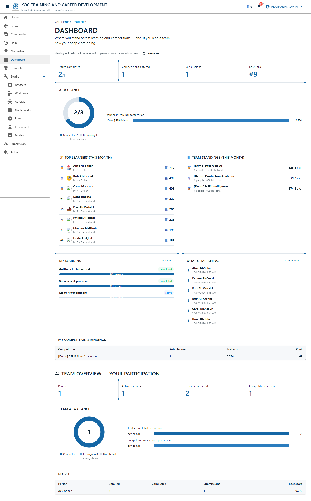
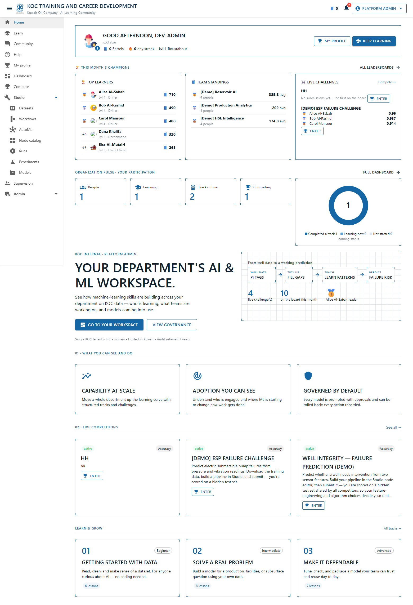
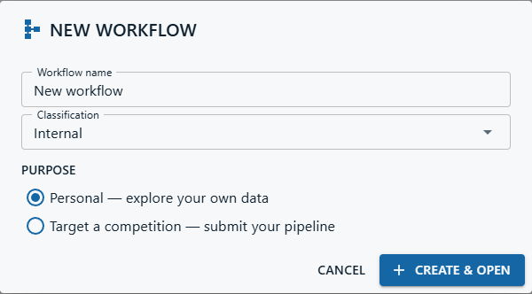
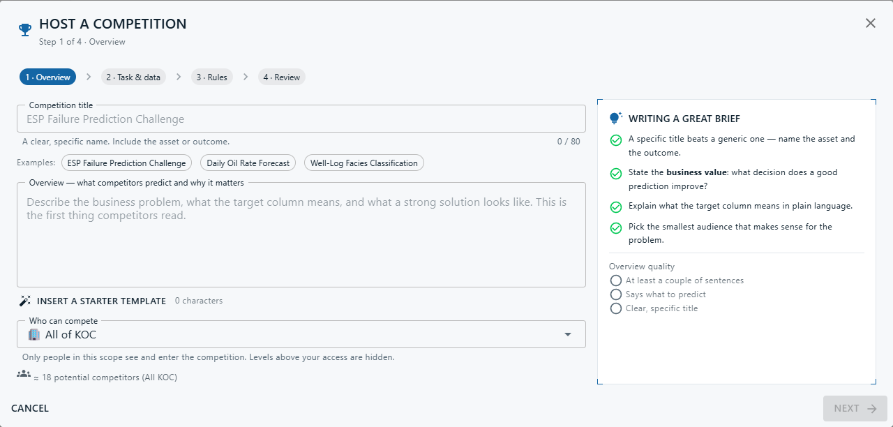
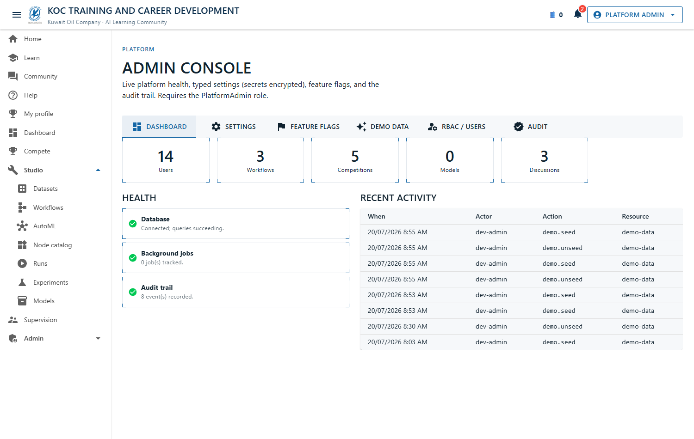
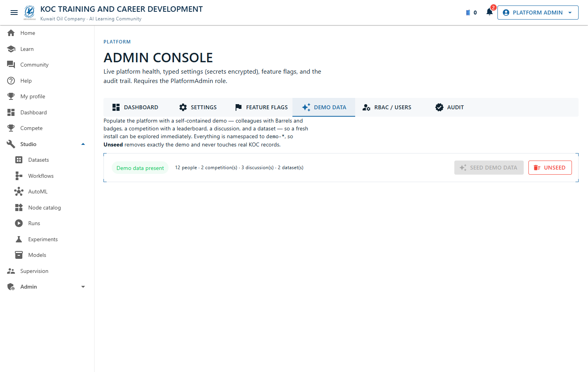
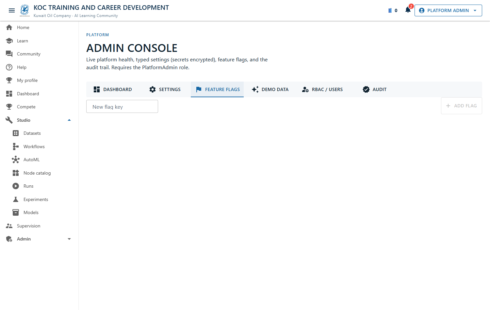
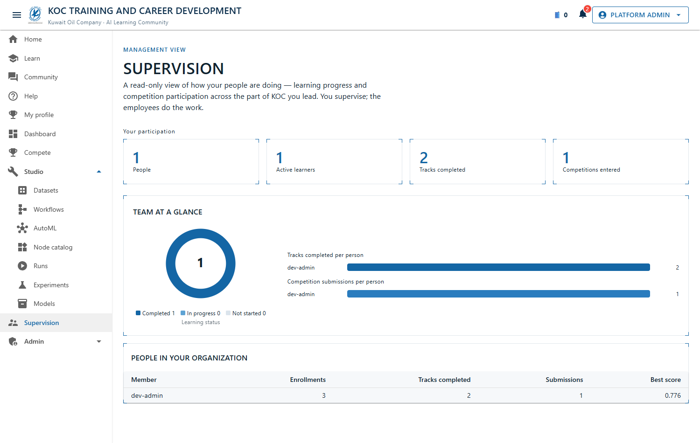
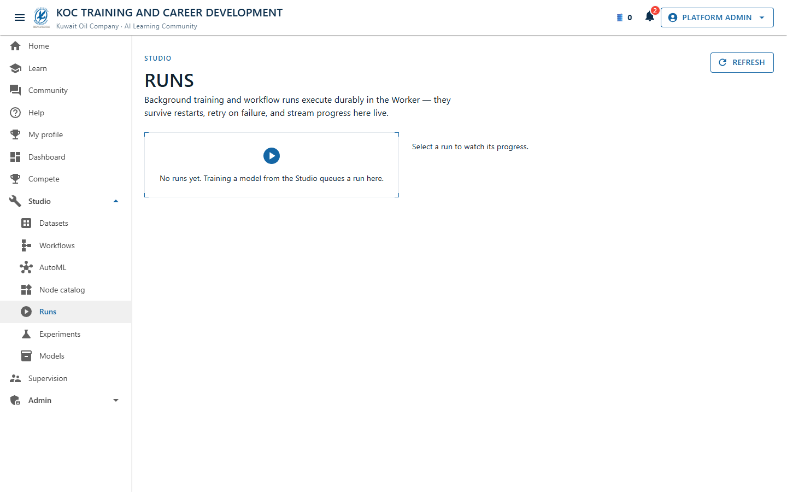
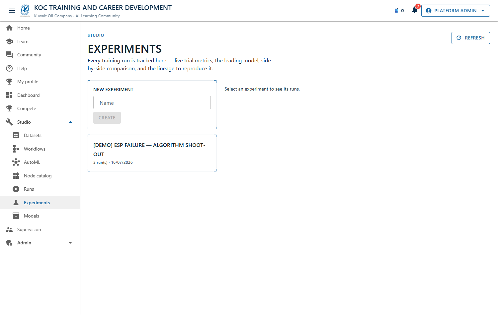
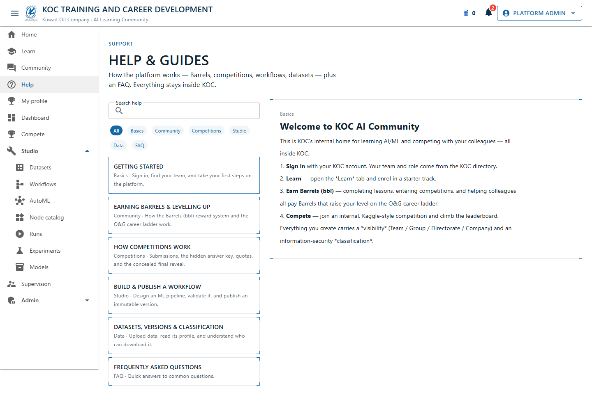